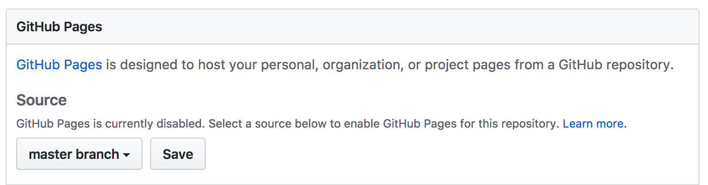

Assignment #4: HTML Me Something¶
You’ve learned a bit of HTML and some CSS, but you have likely only used it in bits and pieces so far, adding or modifying content in exercises or pre-existing files. Here, you are going to take another step forward by building an entire page from scratch. You will also get some practice using Git.
There are two parts to this exercise, one focused on HTML and another focused on CSS. HTML makes up the structure and content of web pages, while CSS dictates the visual style.
Best practices dictate that content and style should be kept as separate as
possible. To that end, we will build the HTML portion of our page first,
and afterwards we will add a few styles with CSS. We do this to avoid using
HTML tags to change the general appearance of our page. For example, what if we
want all of our main headings to be red? We can either add this style one
time in the CSS file, or we must include style="color:red" in EVERY h1 tag.
Especially for large websites, CSS provides the best place to control the
overall appearance of a page.
Getting started¶
In Canvas, Graded Assignment #4: Candidate Testing contains a GitHub Classroom assignment invitation link.
From now on, we will not be using repl.it to work on our assignments. We will use local development to create projects in the future.
Setup the Project¶
- Accept the assignment invitation and navigate to the repository page just as you have done in previous assignments. As always, if you need to refer back to a guide, check out Assignment 0. However, there is no Repl.it button on our repository. Instead, we are going to clone our repo. Let's follow the steps outlined in the Git studio to clone your assignment repository to your own machine.
- Open up the directory in Visual Studio Code and start exploring the different files. You will only make changes to
index.htmlandstyles.cssso make sure that you don't edit any other files.
Getting to Work¶
It’s time to build out your page! Dive into each of the two parts below:
Submitting your work¶
Once you are done with your site, navigate to the Canvas assignment and paste the link to your repo in the submission box and submit!
Bonus Mission¶
If you want to show off your hard work to all your friends, Github has a cool feature called Github Pages that makes this really easy.
Github provides free hosting for any “static” web content (like this project). All you have to do is change a setting on your GitHub repository.
In a browser, go to the Github page for your repository.
Click on the Settings tab
Scroll down to the GitHub Pages section and enable the GitHub Pages feature by choosing your
masterbranch from the dropdown. Hit Save.In any browser, you should now be able to visit
YOUR_USERNAME.github.io/html-me-somethingand see your web page!